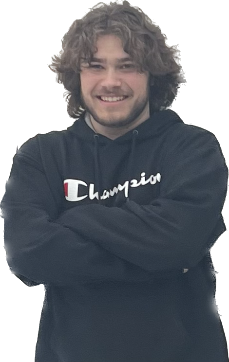
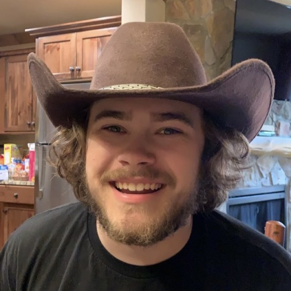
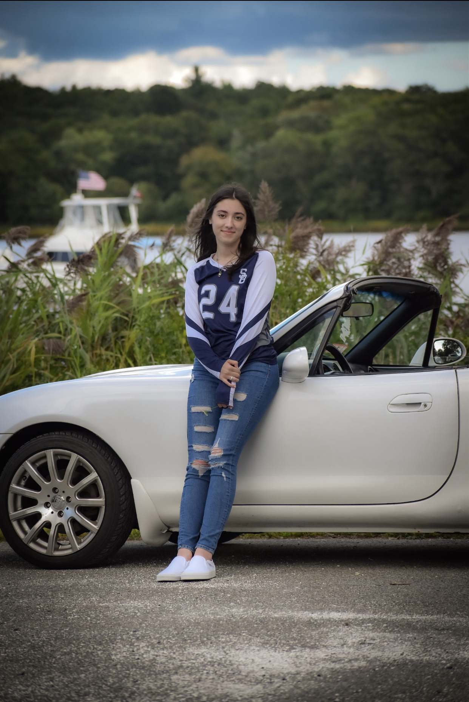
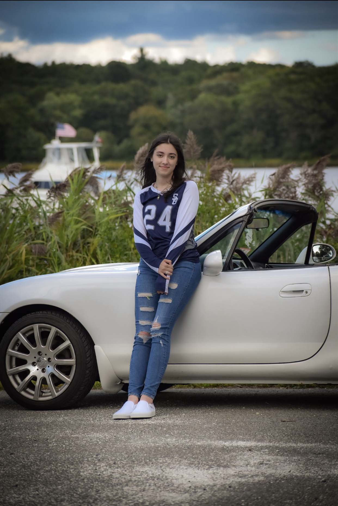

|
 |
 |
About Me


This is where you can learn more about me, my hobbies, my background
and my experience in computer science!
I am a 19 year old computer science major from Massachusetts, now attending the University of Rhode Island. When I'm not focusing on school work, you can often find me
working on my cars, fishing, snowboarding, or hanging out with my friends. I also really enjoy photography and hope to always express my passions
with photos! I was very shy and timid growing up, partially because I came from a small farm town in the middle of nowhere, but intend to change that in college. I have always
had a love for computers and how they worked from a young age. The first real computer game I played was  
